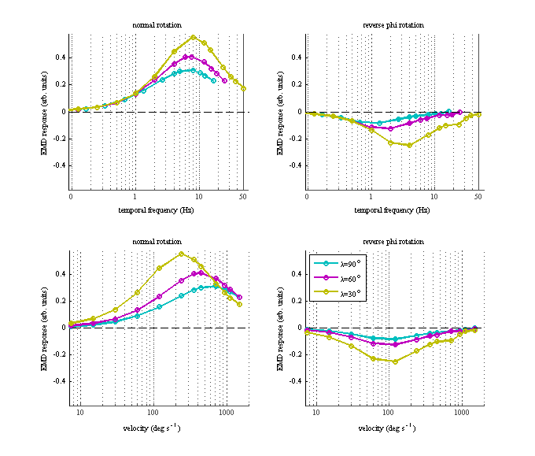

This is the readme for the models associated with the paper: Tuthill JC, Chiappe ME, Reiser MB (2011) Neural correlates of illusory motion perception in Drosophila. Proc Natl Acad Sci U S A 108:9685-90 These matlab files were contributed by J. C. Tuthill. The 2nd figure created by 'EMD_model_script.m':  should be nearly identical to Figure 2C in the paper.